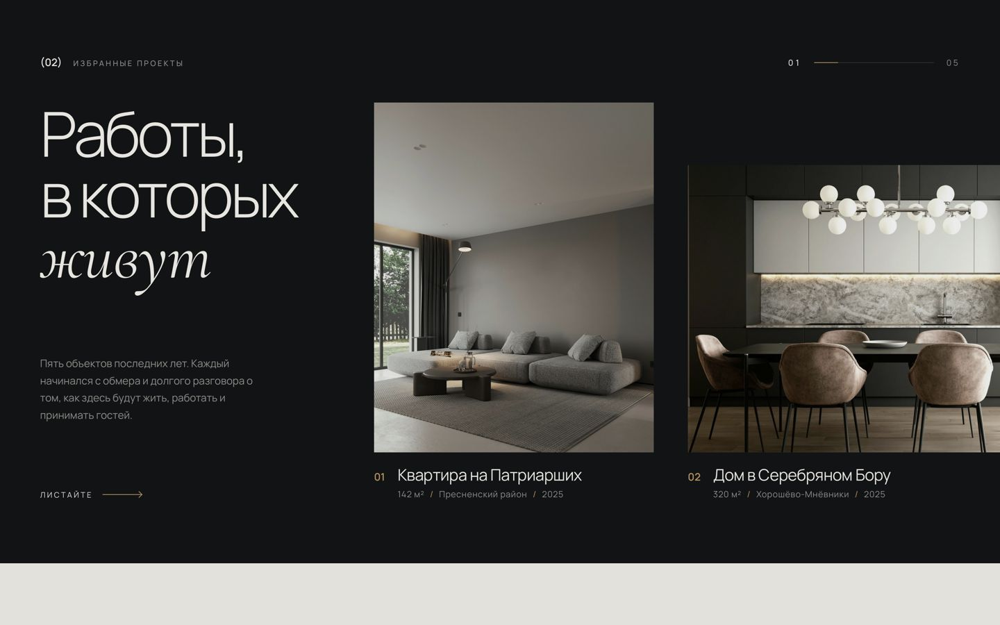

Галерея, которую листают прокруткой
Экран закрепляется, и проекты едут вбок, как страницы журнала. У каждого объекта площадь, район и год.
- карточка проекта открывается в отдельном окне;
- после галереи предложение посмотреть похожие проекты на встрече;
- камень, графит и латунь вместо стандартного белого шаблона.